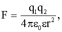
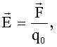
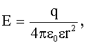
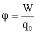
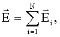
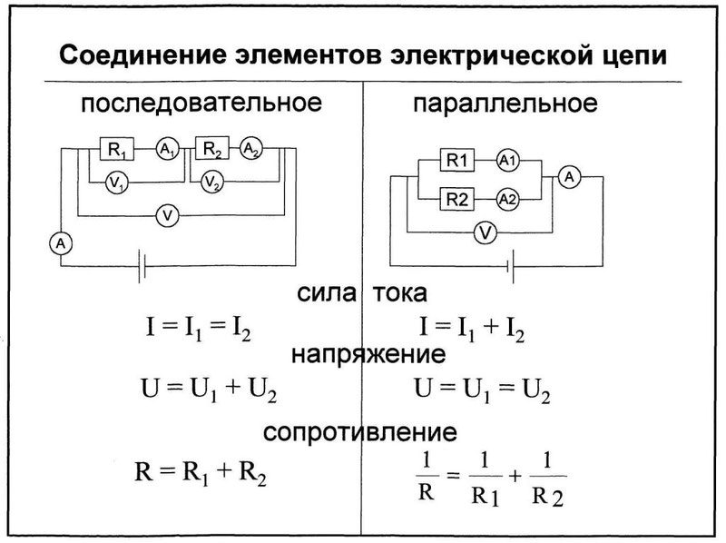
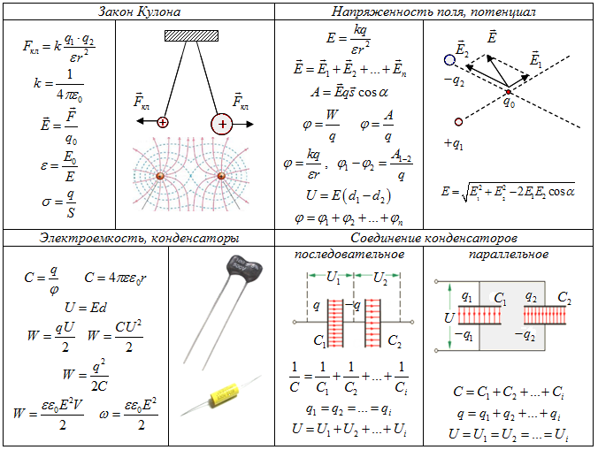

Что такое Электродинамика?
Электродинамика - это раздел физики, который изучает электрические поля и токи, а также их взаимодействие с магнитными полями и движущимися зарядами.
Разделы электродинамики включают:
1.Электростатика
2.Магнетизм
3.Электромагнитные волны
4.Электрические цепи
5.Квантовая электродинамика
Данный раздел изучает электрические поля и заряды в статическом состоянии.
Электростатика описывает, как электрические поля создаются зарядами и как они взаимодействуют друг с другом и с окружающей средой.
В электростатике изучаются такие явления, как закон Кулона, электрическое поле и потенциал, электрический диполь и другие.
Основные формулы
.png)
.png)
.png)
.png)
.png)
Данный раздел изучает магнитные поля, взаимодействие магнитных полей с электрическими полями и движущимися зарядами.
Магнетизм описывает, как магнитные поля создаются магнитными зарядами и как они взаимодействуют с зарядами и другими магнитными полями.
В магнетизме изучаются такие явления, как закон Био-Савара-Лапласа, магнитное поле и потенциал, магнитные диполи и другие
Основные формулы





Данный раздел изучает распространение электромагнитных волн и их свойства, такие как частота, длина волны, поляризация и другие.
Электромагнитные волны возникают при изменении электрических и магнитных полей во времени и могут распространяться в вакууме и в различных средах.
В электромагнитных волнах изучаются такие явления, как закон Максвелла, волновое уравнение, интерференция и дифракция, поляризация и другие.
Основные формулы
.png)
.png)
.png)
.png)
.png)
Данный раздел изучает электрические цепи, включая источники тока, резисторы, конденсаторы и катушки индуктивности.
Электрические цепи описывают, как электрический ток проходит через различные элементы цепи и как он зависит от их параметров.
В электрических цепях изучаются такие явления, как закон Ома, закон Кирхгофа, RC-цепочки, RL-цепочки и другие
Основные формулы

"Квантовая электродинамика"
Данный раздел изучает взаимодействие электромагнитных полей с элементарными частицами на уровне квантовой механики.
Квантовая электродинамика описывает, как фотоны и другие элементарные частицы взаимодействуют с зарядами и другими полями на уровне квантовых событий.
В квантовой электродинамике изучаются такие явления, как калибровочная инвариантность, квантовые флуктуации поля и заряда, вакуумные поля и другие.
Основные формулы
